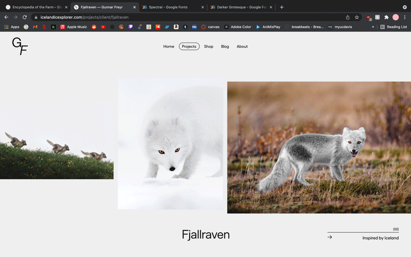
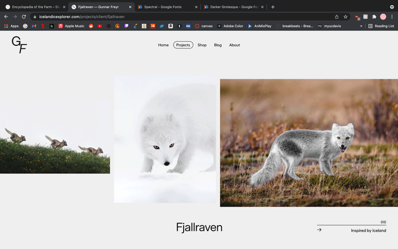

1. Project Summary
I will be updating my Every Picture Studio project. I’d like to make the website an archive for my own film photography, and give the option for the game of pointing and clicking that I’ve already code as an extra (perhaps code a game for each photoset). I will keep the function of adding filters to each image, and sort images by concepts / projects / shoot days. My concept in my head is to go for a minimal/brutalist design, and add subtle transitions and animations to make the site snappy and unique. My hierarchy would be as follows: homepage with list of concepts/shoots → photo galleries for each shoot → point and click game option on photo gallery.
2. Comparison Projects
Icelandic Explorer
I am a huge fan of this site’s brutalist design, and it’s menu layout. I like the way that it strongly emphasizes typography alongside the images without one overtaking the other. I like the animations/transitions applied onto the images – like the small rotation when hovering over different menu items as well as the zoom functionality on the slideshow. I understand that it is a stylistic choice, but perhaps it would look better if the images on the slideshows were all the same size. I think that I will take most of my inspiration from the menu layout and zoom functionalities on this site.
 

Slowness
My favorite thing about this site is its straightforward and accessible nature – it is not cluttered with animations, and the ones it uses (when hovering over different plants on the bottom of the page) are clean and impactful. I’m also a big fan of the background color, it reminds me of the ones that I like to use for my websites. I’ll take inspiration from this site in not making my site too cluttered with animations, and instead emphasize the images/photography. I think that site could’ve done without the hover animation on the text above the footer, and could have removed the white background from the header and footer.
3. Project Goals
My project is similar to these websites in that it is a photo archive. It will follow a very similar hierarchy to Icelandic Explorer – in an initial menu with photo previews which lead to galleries of my different photo collections. I’ve also taken inspiration from the Slowness website in its minimal and readable qualities, and its use of very large images. I definitely want to incorporate my “game” from Every Picture involving pointing and clicking to zoom on different areas of each photo into each one of my photo galleries. My goal is to incorporate this in a way that is unobtrusive to communicating the photos themselves; I will likely have standard photo galleries displaying just the pictures and include the game at the bottom of each gallery.
4. Design Strategies
As mentioned above, I hope to make my design as minimal, readable, and accessible as possible while still maintaining a tasteful and purposeful feeling. I will likely follow brutalist web design aesthetics while incorporating calm, earthy, and less stark color schemes. I hope to emphasize the images on my website and have a nice accompanying font that will pop out without overtaking the images. I’d like to utilize captions and accompanying text for my images very sparingly .. I’d prefer that the viewer interpret the pictures for themselves without trying to relate it back to certain context that I’ve given them. It is likely that the images in each gallery will be displayed largely and evenly, with small typography stating basic info like date, concept/collection name, location, camera, film type etc.
5. Interaction Strategies
I plan to incorporate the same zoom functionality as my every picture project, where users can click to zoom on specific areas of each image. However, I will only include that on specific sections at the end of each gallery, and will use a zoom that follows the mouse position on the regular photos in the gallery. I will also use small translate/rotate animations when hovering over buttons and links etc. My biggest feature that I think will make my project unique in comparison to other galleries is that the user will be able to apply filters to the images they are viewing as they please, giving the page a fun and interactive nature as opposed to a passive viewing one.
6. Experience Goals
I’d like the user to feel relaxed and entertained when they are viewing the site … the photography should be easily accessible and pleasant to view with as much user control as possible (zooming, applying filters, etc). It is my hope that the user would have a fun seeing how different photos look with different filters, and feel as if they can navigate easily between different photos/concepts as they please. I plan to achieve these goals by designing purposefully and minimally, with clearly labeled controls and buttons for any action I’d like the user to take.